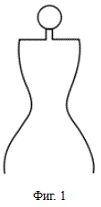
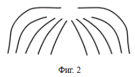
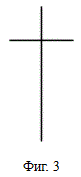
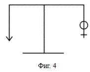
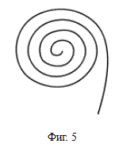
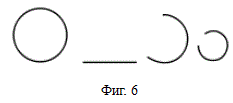

Беседа 3457 от 3877 · Беинса Дуно
Основният тон
Отче наш.
Имате ли зададена тема? – /Нямаме/.
Ако ви се дадат две теми – доброто в света и правдата в света, как бихте ги разрешили?
Някой път определяте какво нещо е доброто. Може ли човек да определи, какво нещо е ябълка, докато не е ял? Сега трябва да се пазите от едно статическо положение. Човек от детинство като расте, добива едно статическо положение. Започне да мисли на колко години е. Като върви по пътя мисли, колко път е изходил и колко път му остава да ходи. Питам: Каква философия има в това? Изходил си 500 километра. Защо това число 500 е с две нули? С какъв знак да ги турим? Изходил си 500 километра, с какъв знак са? Или да допуснем имате да плащате един дълг от 1000 лева, трябва да се изплати. Едно пространство от 1000 километра трябва да се изходи. В изхождането на това пространство изхарчвате известна енергия, давате нещо. 1000 километра като изходите и като платите 1000 лева резултатите ще бъдат ли едни и същи? Сега на туй, извървяното пространство, ще турим знака плюс. 500 километра сме извървяли, имаме плюс 500. Имаме да вървим още 500 километра, то е минус 500. Та сега каква е идеята, че тези 500 километра са изходени? Какво е това пространство? Този знак с минус, туй пространство още не е изминато, а плюс означава, че си го изходил. Като изходиш всичките ще имаш 1000 километра плюс. След като си изходил това пространство какво си придобил. От себе си си дал грамадна енергия, добил си известно познание в ума си, но какво можеш да използуваш 1000 километра? Някой път можеш да напишеш една книга за това място. Геологът или географът може да опишат мястото и да осведомят хората за тази местност. В тази местност дето сте я изминали, може да има известни богатства. Значи, ако тази местност, която вие сте изходили е богата, ще напишете нещо. Но щом тази местност, която сте изходили е пустиня, няма какво да се ползувате. Та казвам: В живота си колко километра изхождате всеки ден? Човек, който расте, колко километра изхожда?


Сега в какво седи обикновената сила на човека и необикновената? В какво седи доброто на човека, не вие какво разбирате, не какво хората разбират под думата „добро“, не вашето мнение. Вие много добре разбирате, но хората какво разбират под думата „добро“? Защото, когато описваме доброто, ние описваме нашето добро, описваме и чуждото добро. Когато описваме природата описваме това, което е. Не описваме това, което виждаме. Вие имате едно понятие, мислите, че като виждате нещата, знаете ги. Ние се заблуждаваме. Ако аз съм на едно кино и хората на екрана, които виждам да мислят, те мислят ли както те мислят? Тъй е турено на екрана и както е направена картината. Казвате: „Аз ги виждам“. Но туй, което виждате, вярно ли е? Казвате: „Видях го“ или казвате: „Видях на картината, че става сражение, разрушение на много работи“. И твърдите, че сте видели това на екрана. Но това, което вие сте видели на екрана вярно ли е? Вярно е, че сте го видели, но туй, което си видял всъщност вярно ли е? Или ти казваш: „Аз го зная“. Знаеш, но това знание вярно ли е? Което е представено на екрана ти го виждаш и ти разправяш това, което си видял. Ти разправяш за киното, как са разпънали Христа. Някой път по Коледа и по Великден дават за Христа разни картини, но това, което се представя на картината вярно ли е? Вярно ли е, че са разпънали Христа, повторили са нещо от миналото? Но откъде сегашните хора знаят как са разпънали Христа тогава? Има картини, които са оставени. Във вашето детинство нали имате фотографии, когато сте били на 5 години, после на 21 година, после на 30 години, доста фотографии имате. Когато са разпънали Христа има доста фотографии, цял филм има и всичко това може да го произведете. Ако хората дълго време мислят, веднага ще произведат в ума си това кино. Филм има и ще видят как един /е/ разпънат. Сега какво разбирате под думата „разпъване на Христа“? Турили го на едно дърво, заковали ръцете и краката, туй е външната страна. Но в това разпъване на дървото, какво се подразбира? Този човек, който е дошъл с едно добро намерение, да покаже на хората пътя, те вземат, че го разпъват. Защо го разпъват, защо на дърво го разпъват, а не на друго нещо? Този кръст, който означава положителните числа, на туй го разпънаха, на кръста го разпънаха.


Понякой път вие казвате, че някой човек трябва да бъде смирен. Има смирение в статическо положение. Казва: „Да се преклониш“. Ще се преклониш, как няма да се преклониш. Разправяше ми един господин, който пътувал из планината, казва: „Гледам отгоре се откъртила канара, търкаля се, няма накъде да бягам. Скрих се под една друга канара. Като се сложих под нея, онази дойде до канарата и прескочи над главата ми“. Той разправя, че при другата канара се е смирил, за да мине над главата му, иначе ще го смаже. Та казвам: В живота човек не трябва да седи в статическо положение, да гледа какво ще стане. Съобразителност трябва. Какво ще ти струва да се наведеш, да се сгушиш при големия камък, че като мине канарата над твоята глава да отскочи и да отиде надолу по пътя си. Сега всеки един от вас трябва да знае за какво е дошъл на земята. Когато едно дете тръгва за училището, нито знае къде е училището. Тръгва от дома си за да отиде в училището. Когато пък излиза от училището отива си в къщи. Като ходи от къщи в училището и от училището в къщи, то ту влиза в училището, ту излиза, но в това влизане и излизане, то е начин за добиване на знание. Ако не знае от къщи как да излезе и в училището как да влезе, то не може да добие знанието. Най-първо трябва да се научи да влиза в училището. Щом влезе в стаята какво трябва да прави, право ли седи? Там има чинове, то ще избере едно място и ще вземе една поза. Учителят има катедра и то няма да седне с гърба си към него, но ще обърне лицето си и ще чака. Дойде учителят пък и той знае върху какво да говори. Учениците пък имат книжка, имат перца и ще вземат забележки. Учителят най-първо занимава децата и им казва: „Вижте това колелце“. Казва: „В туй колело, всичкото в него върви. Нулата съдържа всичките числа в себе си. Всичкото в нея е“. Туй, което казва, че е нищо, то е едно яйце и от това яйце всичко излиза: пиленце излиза, риба излиза, дърво излиза, какво ли не излиза. Всичко в света от него излиза. Някой път ангелите срещаш в едно житено зърно, той се е скрил. Или някой път може да се срещне в едно камъче или в някой кристал. Онзи, който не разбира той се смее на малките работи, а онзи който разбира, той опитва нещата. Умният човек като намери една малка клечка с главичка, чуди се и казва: „Кой ли си е играл с тази клечка?“, а онзи, който разбира, като намери тази дървена клечка, на върха ѝ има известна енергия скрита, при известни условия може да даде много добри резултати. Зимно време, когато всички треперят, като драсне той тази клечка, запали огъня, всички стават вече разположени. Защо тогава вие някой път сте неразположени? В студеното време, вие нямате пари, то е зимно време. Или нямате дрехи, то е зимно време. Нямате обуща, зимно време е. Гладен сте, зимно време е. При всеки недоимък е зима. Тогава през зимата къде ще търсиш? Отвън не може да намериш произведения, но ще ги намериш в складовете някъде. Някъде, в някой склад ще намериш тази главичка турена. Когато са ви изстинали ръцете какво правите? Какво правят децата когато им изстинат ръцете? – Трият ги. Някой път вие се намерите в трудно положение, понеже не можете да решите някой въпрос. Потрийте ръцете си, духнете три пъти, ще се свърши работата. Някой път се опарите. Някой път когато ви боли ръката, в духането се произвежда течение, едно изстудяване. Друг път като ви е изстинала ръката и духате стопляте ръката си. Когато не духаш дъхът е топъл, когато духаш е студен. Някой път и в изгарянето на вашите мисли, постоянно духате. Понякой път и духането е на място. Когато палиш огън духаш. Най-хубавото духане е когато леко духаш, леко да излиза. Когато някой път вие се възбудите, много духате. Възбудили сте се и сте готови да биете, тогава започни леко да духаш на ръцете си, ще се укротите. Отвори устата си и духай леко, от устата ти ще излиза глас. Това е най-хубавото пеене. Казвате: „Кои са най-практичните работи?“ Много навици имате, които сега сте изгубили. Много навици има, при които ние харчим излишна енергия. Ти не може да разрешиш някой въпрос. И ти като не можеш да разрешиш, чешеш се. Ти като се чешеш, ще загазиш съвсем. Във времето, когато змията се е явила, се е чесала отзад. Но понеже лицето ѝ е свързано хоризонтално с нейния гръбначен стълб, тя се е бутала и това я е карало да мисли. В животните мисълта е свързана с опашките им отзад. Животното трябва да мърда опашката си, за да възбуди задната част на мозъка. Ти като искаш да мислиш тури ръката си на челото. Така повече ще възбудиш мисълта си, отколкото ако буташ главата си отзад като се почешеш. Учителите понякой път много добре разбират това. Като излезе някой ученик, побутне се отзад. Учителят знае, че той вече не разбира. Учителят му каже: „Седни си“, тури му двойка. Онзи, който като излезе не се бута, той вече разбира. Учителят му каже: „Реши тази задача“ и той я решава. Та по навик ние си бутаме главата отзад. Не е лошо да се буташ, но може да си буташ главата не на място. Или някой път искате някоя работа и той си извади кърпата, и си трие устата или който има мустаци, започва да си глади мустаците. Тази работа е животинска, те са опити на животните. Мъжът като бута мустаците си, то са рогата. То е било във времето на говедата.
Всички трябва право да мислите. Имаш мъчнотия в себе си, едно неразположение. Намерете произхода на неразположението. Да допуснем, че си ял само едно блюдо и малко хляб. Сега дават 400 грама хляб. Ял си 1000 грама, а сега има само 400 грама. Седиш и си недоволен. Като си ял 1000 грама какво си придобил? 400 грама сега като ядете, се изисква само едно нещо. При 1000 грама сте яли скоро, за 10–15 минути, а сега при 400 грама ще дъвчете повече и ще ви вземе 25 минути. Като дъвчете хляба повече, повече ще излезе. Сега обедът ви ще бъде по-дълъг. Когато имахте много ядене за 5–10 минути свършвахте обеда, а сега 20–25 минути ще дъвчете и от този хляб ще изкарате нужната хранителност. Всяка мисъл, която дойде в ума ви, трябва вие да се запознаете с нея, да опитате силата, която съдържа. Вие например, говорите за доброто, но опитвали ли сте думата „добро“? Защо не направите този опит? Някой път сте много неразположен и започнете да мислите: „Добро, добро, добро, добро.“ Мислете веднъж, дваж, триж, 10 пъти „добро“. Казвате: „Че толкова глупав човек ли съм?“ Ти като се тревожиш си още по-глупав. Ти се тревожиш и казваш: „Аз това ще направя, аз този ще набия.“ Че той е по-силен. Ако е за бой, той тебе ще те набие. Ти си смешен човек, нищо не можеш да направиш. Ти мисли: „Добро, добро, добро, добро“, докато изчезне това състояние, да добиеш едно равновесие. Тази дума вече в тебе придобива вътрешен смисъл. Нали сте били в асансьори? Като се качиш там, трябва да знаеш къде да бутнеш. Ако бутнеш друго копче ще слезеш надолу. Ти имаш някаква идея, искаш да слезеш надолу, трябва да бутнеш нея. Някой път искаш да слизаш пък буташ друга идея, друго копче и ти се качваш нагоре. В дадения случай мисълта ти трябва да бъде съгласна с посоката, която се движиш. Трябва да знаеш къде да буташ. Често виждам някои хора, когато се уплаши, хваща главата си отгоре, от двете страни. Глупавият човек като хваща главата си така, той трябва да плюе на краката си и да удвои бягането. Защото той като хване главата си отзад, там е мястото на страха и като бутне мястото на страха, уплаши се повече и бяга. Когато човек се уплаши не трябва да бута задната част на главата си, а трябва да се хване отпред на челото, отстрани. Умния човек така се хваща. Онзи, който се хваща отзад, той се готви да бяга, а онзи, който се хваща отпред за челото, иска да разреши въпроса правилно. Ако ти си в областта на страха, на слабия човек, бягай, не ти трябва никаква философия. С мечката не искай да се разговаряш, да ѝ казваш какво иска или че няма право, или че има право. Трябва да плюеш на краката си и да бъдеш далеч от мечката. Ако искаш да седиш, да се разправяш, тя ще дойде и ще ти каже: „Слабият трябва да бяга“. Какво е бягането? Ти като нямаш сила да се бориш имаш сила да бягаш. Ако аз се движа бързо, дойде една мечка при мене, аз може да я прескоча, отпред, отгоре. Някой път идеш, има големи паяци, които са лоши. Пък има една оса като дойде, започне да се върти около този паяк наоколо, върти се да го шашардиса. Като се върти около него, той се наплаши и тя го жилне някъде. Осата като дойде не отива изведнъж да се бори, но се върти, силно бръмчи, бръмчи, уплаши се паякът от това бръмчене и тя го жилне някъде. Въпросът се свършва.
Сега един цигулар като вземе цигулката, трябва да знае правилно къде да си тури пръстите. Всеки пръст да тури точно на мястото. Да знае мястото на всяка позиция. Да знае мястото на всеки тон, че нито една десета от милиметъра да не мърда. Същото е и когато свири на пианото. И при художниците е същия закон. Ти трябва да знаеш как да натиснеш. Един художник като работи, трябва да бъде много деликатен, да знае как да размесва боите и да знае как да натиска с четката, не е така лесна работа. Той трябва да знае правилно да полага боите.
Всичко това, което съм начертал на дъската, за колко бихте го продали? Ако един учител ви даде една задача: „За какво може да ти послужи числото 2?“ Веднага ще реша задачата. Числото 2 ще впрегне краката си на работа. Числото 4 ще впрегне и ръцете си на работа. Това е разрешението на квадрата. Щом е квадрат – работа на ръцете и на краката. Казвам: Това, ако е четириъгълник. Ами, ако е петоъгълник ще впрегне и главата, ако е шестоъгълник ще впрегне и очите. Ако е седмоъгълник ще впрегне и носът. Ако е осмоъгълник ще впрегне и ушите. В геометрията триъгълникът какво показва? Триъгълникът показва, че ще станеш. Ти си вече изправен като войник. Триъгълникът означава един събуден човек, който се е събудил и е на работа. Тогава казва учителят: „Турете в действие числото 2, турете в действие числото 3.“ Числото 3 в движение е триъгълникът. Тук имате опорна точка. Имате една мъчнотия, опорна точка е тя. Тази точка трябва да знаеш в каква посока да тръгнеш. Имате числото 2. Имате две страни отдето да тръгнеш. Да кажем имате правата AB  . Имате две възможности. Може да тръгнете или от A към B или от B към A. В един квадрат от какво положение ще тръгнете? В квадрата имате повече възможности, а в един куб имате още повече възможности. В едноизмерното пространство, двуизмерното, триизмерното и четириизмерното условията се подобряват. Подобрението на условията зависи от пространството, което придобиваш. Ако не разбираш законите на едноизмерното пространство, ако не знаеш силата на една точка. Силата на една точка е да образува една права линия. Една права линия от безброй точки. Тия безброй точки може да те упътят да образуваш една плоскост, а пък самата плоскост ще ти даде посока или възможност да влезеш в триизмерното пространство. Значи, от центъра вие ще влезете в закона, защото правата линия е закон на правдата. Плоскостта показва правото да се добие правата линия. Плоскостта може да се завладее чрез закон. Щом завладеете плоскостта тогава може да влезете в третото измерение. Имате перпендикуляр. Един перпендикуляр в една плоскост показва друга посока в пространството. Перпендикулярът е друг един свят, по-обширен, отколкото плоскостта. Следователно, това са законите на съзнанието. От чисто психологическо гледище казваме: „Повдигна се съзнанието“. Ти можеш от съзнанието на една точка да влезеш в съзнанието на правата линия или в съзнанието на плоскостта. Или искаш да влезеш в двуизмерното пространство, перпендикулярът ще ти покаже посоката. Ако искаш да намериш плоскостта, от правата линия трябва да тръгнеш перпендикулярно. В правата линия щом дигате перпендикуляр имате плоскост. В плоскостта щом дигате перпендикуляр имате куб. В съзнанието същия закон е. Вие ще знаете как да се избавите от известна мъчнотия. Известни мъчнотии се разрешават в точката, в известен център. Известни мъчнотии се разрешават в правата линия. Известни мъчнотии се разрешават в областта на плоскостта, а други мъчнотии се разрешават в триизмерното пространство. Казвам: В съзнанието си трябва да разбирате законите на едноизмерното, двуизмерното, триизмерното, четириизмерното пространство. Трябва да разбираш, иначе не можеш да се примириш с един човек. В тебе е силно развито чувството стяжение, искаш всякога да забогатяваш. Ти с това чувство ще си създадеш хиляди мъчнотии. Банкер си, на този дадеш, на онзи дадеш, после даваш ги под съд, осъдиш ги. Всичките тия хора след време ще те намразят и със своята мисъл ще те безпокоят известно време. Ти може да осъдиш един човек, но и той ще те съди. Като си иде в стаята и започне да те съди, и знае как да изпрати лошите си мисли, че ти цяла нощ няма да можеш да спиш. По радиото ти изпраща лоши мисли и ти казва: „Ти си изедник, ти си несправедлив човек, ти си лош човек, от тебе нищо няма да стане“. Ти ще се разрушиш и ти трябва да се бориш. Та казвам: Човек най-първо трябва да се справи със своята алчност, не да се откаже. Аз ето какво разбирам да се откаже. Човек трябва да се откаже от идеята да пренесе едно езеро от едно място на друго и да стане море. Радвай се на това езеро и ходи при него. И ще пренесеш това езеро да стане твое и да се радваш. Ти ще изгубиш живота си. Предпочитай всеки ден да ходиш при езерото, да е на мястото си, отколкото да мислиш да направиш канал, та да стане твое езерото. Остави нещата на мястото и ти ходи при тях. Не искай знанието да дойде при тебе, ти ходи при знанието. Не искай силата да дойде при тебе, ти ходи при силата. Не искай слънцето да дойде при тебе, ти ходи при слънцето. Ако някой от вас би поискал слънцето да му дойде на гости, може ли слънцето да му дойде на гости? То е абсолютно невъзможно. То и на земята не може да дойде, и земята не може да го приеме. Земята няма такава амбиция. Значи нашето слънце може на гости да иде при някое голямо слънце. Малкото при голямото може да иде, но голямото при малкото не може да дойде. Вие всички желаете голямото нещо да дойде при вас. То е погрешна идея. Сега и вие имате стремежи. Зад стремежа седи, когато малкото се стреми към голямото. Всякога ние трябва да се стремим към вечното, то е прогреса на един човек, не вечното да дойде при нас. Казва Писанието: „Живеем и се движим в Бога“. Ония блага, които са ви дадени, вие ги използувайте. След като се наяде човек какво трябва да прави? Болният като се наяде какво трябва да прави? Свещеникът като се наяде да иде на църква, учителят като се наяде да иде на училище. Ученикът като се наяде да отиде в училището да слуша. Работникът като се наяде да иде да работи, кой каквато работа има, като се наяде да иде да я върши. Щом се наядеш вече нищо не те оправдава, ако не работиш. Докато си гладен може да седиш на едно място, но щом се наядеш трябва да идеш да изпълниш работата. Ние сме задължени да извършим в живота работата, която ни е дадена. Казва: „Искам да ям“. Щом се наядеш, трябва да свършиш нещо. Ако ти се наядеш и не вършиш нищо, ти си отговорен. Или дишаш – пак същия закон е; слушаш – пак същия закон е; гледаш – пак същия закон е; мислиш – пак същия закон е. Щом мислиш трябва да свършиш някаква работа. Чувствуваш и нищо не вършиш, седиш, чакаш да дойде някой отнякъде, дано Господ да ти помогне. Че ти си в областта на заблуждението, оттам дето нищо не иде. В мисълта е Господ, в чувствата е Господ, в светлината е Господ, в яденето е Господ. След като си ял, Господ казва: Хайде на работа. След като дишаш, Господ казва: Хайде на работа. След като слушаш, Господ казва: Хайде на работа. Ние сега схващаме статически. Казваме: „Да дойде някой отнякъде“. Че то е дошло вече. Аз ви казвам. Вие искате големите работи. Бог ви обича в малките работи, но вие не сте го оценили. Мислите ли, че ако учителят ви даде малки задачи и вие не сте ги разрешили, той ще ви даде по-сложни? Никога. Вие искате невъзможни работи. Всяка задача трябва да бъде разрешена. Имаш два крака, какво трябва да ги правиш? Легнеш вечерно време, ще хванеш големия пръст, ще го побуташ. Ще започнеш от големия пръст, от палеца. После втория пръст, третия, четвъртия, петия, ще ги измиеш хубаво, ще ги побуташ. После ще побуташ петите на краката си. Това е, ако искаш да бъдеш здрав. Аз ви казвам: Човек, който иска да бъде здрав трябва да си мие краката, да попипа пръстите си. Някои от вас не сте здрави понеже не си миете краката и не си бутате пръстите. Вие трябва да бъдете в едно нормално отношение със земята. Ако силите, които са във вашия организъм, не са в общение със земята и със слънцето, вие не може да бъдете здрави. Краката са проводници, очите са проводници, ушите са проводници, устата е проводник, сърцето е проводник, умът е проводник. Всичките проводници трябва да ги знаете. Първото нещо направете един опит. Цяла една седмица, по закона на обичта да си измивате краката съзнателно, като че вършите една услуга на някой ваш приятел, когото обичате. Как майката обича да мие краката на децата си. Измиването на краката е най-важен въпрос в света. Измиването на ръцете също. Ние постоянно си мием ръцете. Вие като си миете ръцете с вода, но съвсем е друго миенето, така не се мие. Ще имате един хубав леген, един чист леген, само за миене. Ще туриш ръцете си, ще ги наквасиш, ще започнеш полека внимателно и ще измиеш палеца на едната ръка, после палеца на другата ръка, после показалеца, средния пръст. Вие ще кажете: „Че къде ще иде тая работа?“ Човек трябва да влезе във връзка с ония сили, които са свързани с тялото. И като си измиваш ръцете ще влезеш във връзка с ония сили в пространството. Тия пръсти са свързани с ония сили в пространството и ти несъзнателно влизаш в правилно отношение с природата. Като се миете отгоре, избърсвате се с кърпата, то е недовършена работа.
. Имате две възможности. Може да тръгнете или от A към B или от B към A. В един квадрат от какво положение ще тръгнете? В квадрата имате повече възможности, а в един куб имате още повече възможности. В едноизмерното пространство, двуизмерното, триизмерното и четириизмерното условията се подобряват. Подобрението на условията зависи от пространството, което придобиваш. Ако не разбираш законите на едноизмерното пространство, ако не знаеш силата на една точка. Силата на една точка е да образува една права линия. Една права линия от безброй точки. Тия безброй точки може да те упътят да образуваш една плоскост, а пък самата плоскост ще ти даде посока или възможност да влезеш в триизмерното пространство. Значи, от центъра вие ще влезете в закона, защото правата линия е закон на правдата. Плоскостта показва правото да се добие правата линия. Плоскостта може да се завладее чрез закон. Щом завладеете плоскостта тогава може да влезете в третото измерение. Имате перпендикуляр. Един перпендикуляр в една плоскост показва друга посока в пространството. Перпендикулярът е друг един свят, по-обширен, отколкото плоскостта. Следователно, това са законите на съзнанието. От чисто психологическо гледище казваме: „Повдигна се съзнанието“. Ти можеш от съзнанието на една точка да влезеш в съзнанието на правата линия или в съзнанието на плоскостта. Или искаш да влезеш в двуизмерното пространство, перпендикулярът ще ти покаже посоката. Ако искаш да намериш плоскостта, от правата линия трябва да тръгнеш перпендикулярно. В правата линия щом дигате перпендикуляр имате плоскост. В плоскостта щом дигате перпендикуляр имате куб. В съзнанието същия закон е. Вие ще знаете как да се избавите от известна мъчнотия. Известни мъчнотии се разрешават в точката, в известен център. Известни мъчнотии се разрешават в правата линия. Известни мъчнотии се разрешават в областта на плоскостта, а други мъчнотии се разрешават в триизмерното пространство. Казвам: В съзнанието си трябва да разбирате законите на едноизмерното, двуизмерното, триизмерното, четириизмерното пространство. Трябва да разбираш, иначе не можеш да се примириш с един човек. В тебе е силно развито чувството стяжение, искаш всякога да забогатяваш. Ти с това чувство ще си създадеш хиляди мъчнотии. Банкер си, на този дадеш, на онзи дадеш, после даваш ги под съд, осъдиш ги. Всичките тия хора след време ще те намразят и със своята мисъл ще те безпокоят известно време. Ти може да осъдиш един човек, но и той ще те съди. Като си иде в стаята и започне да те съди, и знае как да изпрати лошите си мисли, че ти цяла нощ няма да можеш да спиш. По радиото ти изпраща лоши мисли и ти казва: „Ти си изедник, ти си несправедлив човек, ти си лош човек, от тебе нищо няма да стане“. Ти ще се разрушиш и ти трябва да се бориш. Та казвам: Човек най-първо трябва да се справи със своята алчност, не да се откаже. Аз ето какво разбирам да се откаже. Човек трябва да се откаже от идеята да пренесе едно езеро от едно място на друго и да стане море. Радвай се на това езеро и ходи при него. И ще пренесеш това езеро да стане твое и да се радваш. Ти ще изгубиш живота си. Предпочитай всеки ден да ходиш при езерото, да е на мястото си, отколкото да мислиш да направиш канал, та да стане твое езерото. Остави нещата на мястото и ти ходи при тях. Не искай знанието да дойде при тебе, ти ходи при знанието. Не искай силата да дойде при тебе, ти ходи при силата. Не искай слънцето да дойде при тебе, ти ходи при слънцето. Ако някой от вас би поискал слънцето да му дойде на гости, може ли слънцето да му дойде на гости? То е абсолютно невъзможно. То и на земята не може да дойде, и земята не може да го приеме. Земята няма такава амбиция. Значи нашето слънце може на гости да иде при някое голямо слънце. Малкото при голямото може да иде, но голямото при малкото не може да дойде. Вие всички желаете голямото нещо да дойде при вас. То е погрешна идея. Сега и вие имате стремежи. Зад стремежа седи, когато малкото се стреми към голямото. Всякога ние трябва да се стремим към вечното, то е прогреса на един човек, не вечното да дойде при нас. Казва Писанието: „Живеем и се движим в Бога“. Ония блага, които са ви дадени, вие ги използувайте. След като се наяде човек какво трябва да прави? Болният като се наяде какво трябва да прави? Свещеникът като се наяде да иде на църква, учителят като се наяде да иде на училище. Ученикът като се наяде да отиде в училището да слуша. Работникът като се наяде да иде да работи, кой каквато работа има, като се наяде да иде да я върши. Щом се наядеш вече нищо не те оправдава, ако не работиш. Докато си гладен може да седиш на едно място, но щом се наядеш трябва да идеш да изпълниш работата. Ние сме задължени да извършим в живота работата, която ни е дадена. Казва: „Искам да ям“. Щом се наядеш, трябва да свършиш нещо. Ако ти се наядеш и не вършиш нищо, ти си отговорен. Или дишаш – пак същия закон е; слушаш – пак същия закон е; гледаш – пак същия закон е; мислиш – пак същия закон е. Щом мислиш трябва да свършиш някаква работа. Чувствуваш и нищо не вършиш, седиш, чакаш да дойде някой отнякъде, дано Господ да ти помогне. Че ти си в областта на заблуждението, оттам дето нищо не иде. В мисълта е Господ, в чувствата е Господ, в светлината е Господ, в яденето е Господ. След като си ял, Господ казва: Хайде на работа. След като дишаш, Господ казва: Хайде на работа. След като слушаш, Господ казва: Хайде на работа. Ние сега схващаме статически. Казваме: „Да дойде някой отнякъде“. Че то е дошло вече. Аз ви казвам. Вие искате големите работи. Бог ви обича в малките работи, но вие не сте го оценили. Мислите ли, че ако учителят ви даде малки задачи и вие не сте ги разрешили, той ще ви даде по-сложни? Никога. Вие искате невъзможни работи. Всяка задача трябва да бъде разрешена. Имаш два крака, какво трябва да ги правиш? Легнеш вечерно време, ще хванеш големия пръст, ще го побуташ. Ще започнеш от големия пръст, от палеца. После втория пръст, третия, четвъртия, петия, ще ги измиеш хубаво, ще ги побуташ. После ще побуташ петите на краката си. Това е, ако искаш да бъдеш здрав. Аз ви казвам: Човек, който иска да бъде здрав трябва да си мие краката, да попипа пръстите си. Някои от вас не сте здрави понеже не си миете краката и не си бутате пръстите. Вие трябва да бъдете в едно нормално отношение със земята. Ако силите, които са във вашия организъм, не са в общение със земята и със слънцето, вие не може да бъдете здрави. Краката са проводници, очите са проводници, ушите са проводници, устата е проводник, сърцето е проводник, умът е проводник. Всичките проводници трябва да ги знаете. Първото нещо направете един опит. Цяла една седмица, по закона на обичта да си измивате краката съзнателно, като че вършите една услуга на някой ваш приятел, когото обичате. Как майката обича да мие краката на децата си. Измиването на краката е най-важен въпрос в света. Измиването на ръцете също. Ние постоянно си мием ръцете. Вие като си миете ръцете с вода, но съвсем е друго миенето, така не се мие. Ще имате един хубав леген, един чист леген, само за миене. Ще туриш ръцете си, ще ги наквасиш, ще започнеш полека внимателно и ще измиеш палеца на едната ръка, после палеца на другата ръка, после показалеца, средния пръст. Вие ще кажете: „Че къде ще иде тая работа?“ Човек трябва да влезе във връзка с ония сили, които са свързани с тялото. И като си измиваш ръцете ще влезеш във връзка с ония сили в пространството. Тия пръсти са свързани с ония сили в пространството и ти несъзнателно влизаш в правилно отношение с природата. Като се миете отгоре, избърсвате се с кърпата, то е недовършена работа.
Гледам, някой се подписал и написал едно Т, три линийки и една чертичка отгоре. Така не се пише. Или е турена някаква линийка само. Че това е стенография, много е бързал този човек. Напиши хубаво буквата. Гледам колко писма има, на които буквите са изопачени. И така, както изопачавате буквите, след 1000 години, съвсем друга азбука ще имате. Пишете буквите тъй както са. Считайте, че всеки ден носи известно благо. Вие пеете една песен. Започва песента от „до“. Трябва да разбирате защо започвате от „до“. Песента е на място, понеже отивате на нивата да сеете. Когато орете и пеете „до“, не е на място. Който отива да оре да започне от „ре“. Който отива да сее, да започне от „до“. Който отива да плеви да започне от „ми“. Който отива да жъне, трябва да започне от „фа“. Всяко нещо има свой смисъл. Всяко нещо има една буква. Какво означава буквата „м“? Какво означава знака „м“? „М“-то означава да даваш повече и да вземаш по-малко. „М“-то означава да преминеш всичките противоречия в живота. Който разбира закона на „м“-то, може да промени противоречията. „Милост“ започва с „м“. Сега трябва приложение. Кога вземате вярно един тон „до“? Онези от вас, които искат да станат певци най-първо нека ядат сладки ябълки и хубаво да ги дъвчат. Тази ябълка дава хубаво разположение на гласа. Тонът „до“ хубаво се взема. Това е за онези, които са родени за певци, а не за онези, които не са родени. Я сега както сте всички вземете тона „до“. /Всички взехме тона „до“./ Днес барометърът се дига, тоновете са сухи, тъй щото някои трептения липсват. Има музикално време. Време, когато тоновете са верни. Но при влажното време тоновете не са верни и при сухото време не са верни. Има едно нормално време, когато барометърът е верен. Днес леко не могат да се вземат тоновете, размирно е времето. Мекота трябва в тоновете. Според мене, „до“ е „доброто“. Доброто е основния тон на материалния живот. Ако знаеш тона на доброто, тогава всичко иде. Доброто е основния тон „до“ на физическия живот. Когато пееш „до“, ако го вземеш вярно, веднага погледнеш нивите, усещаш, че ти е приятно. Щом пееш и не чувствуваш тази приятност, тонът не е „до“. Като вземеш „до“ в материалния свят, тогава всичко в природата да ти бъде приятно, всички последващи тонове са свързани. Дават се украска, украшенията в природата се изявяват. То е основния тон в една къща. Вратата, през която можете да влезете и да излезете е основният тон. Ако не знаеш да отваряш и да затваряш тази врата, ти нямаш отношение към къщата. Ако пробиеш някоя дупка от друго място да влизаш, то не е хармония, то е дисхармония в природата. Когато влизаш във входа на къщата през вратата, то е основния тон. Ти влизаш и излизаш, този основен тон има две положения: Влизане и излизане. Като влизаш, ти с влизането принасяш нещо, а като излизаш, ти занасяш нещо от себе си. Всякога когато станеш сутрин, какво трябва да направиш. Ти никак не си спал. Цялата нощ не си спал. Какво трябва да бъде положението? Под думата „спане“ разбирам една правилна обмяна на един свят с друг. Защото в спането човек от физическия свят влиза в друг свят, по-висок от физическия свят и във физическото тяло на човека става пречистване. В спането съзнанието на човека излиза от тялото за да си почине. Понеже съзнанието вътре в тялото е едно бреме. Целия ден твоето съзнание кара тялото насам-натам. Трябва да излезеш вечерно време и да оставиш тялото да си почине. Като си почине ще се върнеш, и пак си добре дошъл. Спането е да дадеш малка почивка на тялото. Понякой път човек трябва да прекъсне, да остави тялото си да почине. Ние се смущаваме. Ти изискваш от тялото повече, отколкото може да направи в дадения случай. Да допуснем, че сега вие имате неразположение. Попейте си, защо да не си послужите с музиката. Някой път усещате, че сте груб. Употребете терцата или малката, или голямата терца. Вземете една терца, „до“ – „ми“, например. Или вземете „ми“ – „сол“, или вземете трета терца, „сол“ – „си“.
Сега да изпеем една песен за доброто. /Учителят пее: „Доброто е сила в живота. То постига всичко, що е отредено. С него побеждава човек всички мъчнотии, които може да посрещне в живота. Без него нищо не се придобива“. Всички пеем: „Доброто е сила в живота“./ Или може да пеете така: „Доброто прави живота красив, доброто е красота в живота. Те ходят ръка за ръка“. Сега когато някой път се говори за музиката, тя не изключва материалните неща, материалните неща са неорганизирани. Целият материален свят трябва да се преобрази. Това състояние на материята, в което сега се намирате, трябва да се преобрази, да се преорганизира. Да стане материята по-подвижна, по-достъпна. Сега е много упорита, не се поддава. Като влезе една идея, ти не може да я помръднеш, залости се на едно място. Като, че ли е последен резултат, пък то не е така.


Сега всеки един от вас ще извади две неща: Ще търсите светлина за ума и топлина за сърцето. Нормалната топлина за сърцето не губете и нормалната светлина за ума не губете.
Тогава ще ви дам за през цялата година следното да казвате: „Благодарим ти, Господи, за хубавия ум, който си ми дал, за доброто сърце и за хубавото тяло“. Има за какво да благодарите.
Само светлият път на Мъдростта води към Истината!
В Истината е скрит животът!
ХХI година.
4 лекция на Младежкия окултен клас,
държана от Учителя на 17. Х. 1941 г. петък, 5 ч. сутринта
София – Изгрев.